Comment savons-nous si une population est en bonne santé ?
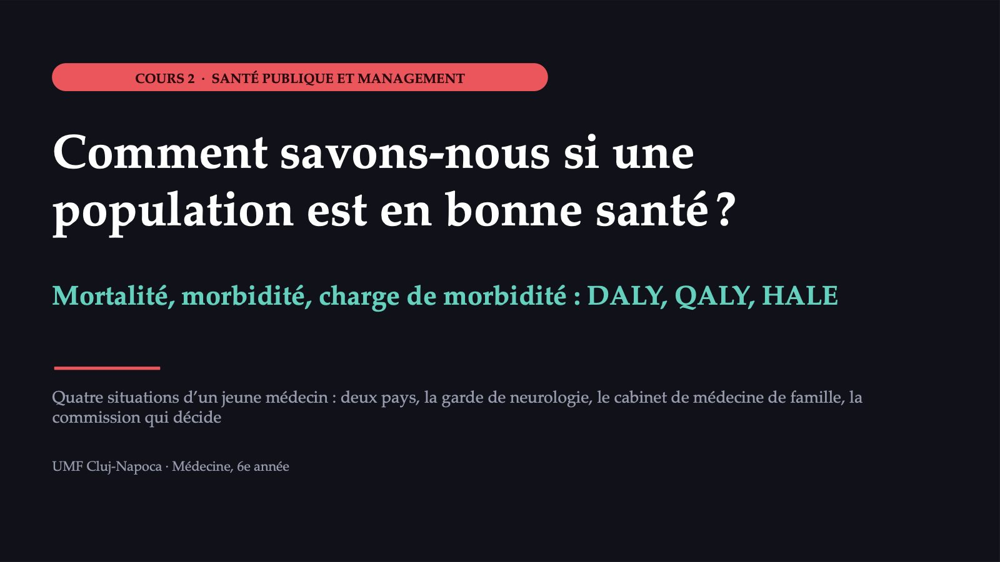
1 / 43Ce que nous faisons de vos réponses
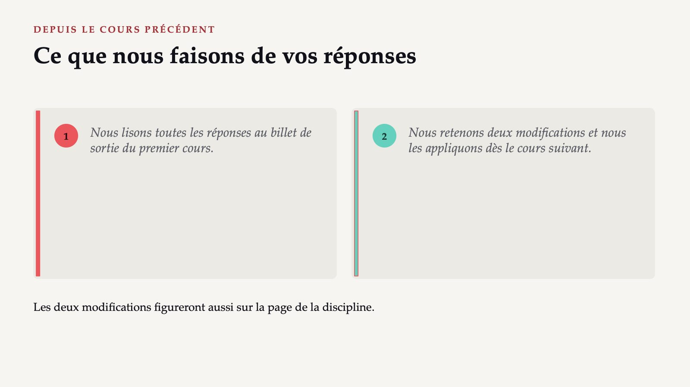
2 / 4376,5
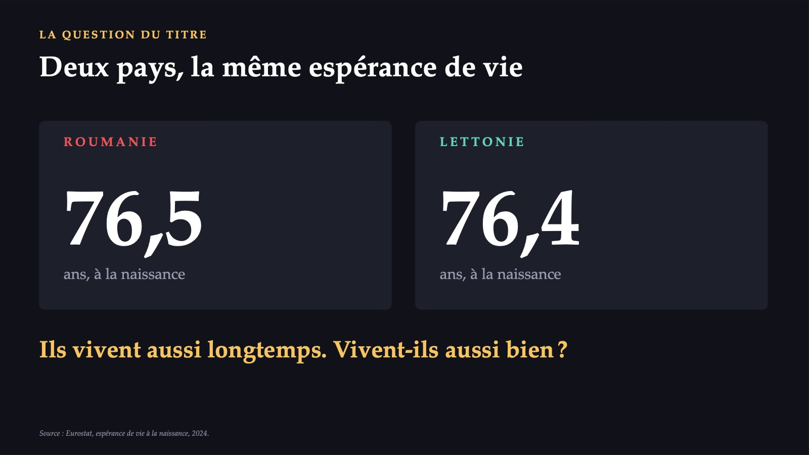
3 / 43Lequel des deux pays est en meilleure santé ?
4 / 43On ne peut pas le dire à partir de ces chiffres
![LA RÉPONSE On ne peut pas le dire à partir de ces chiffres Pays et année Années de vie en bonne santé Mention Roumanie, 2024 65,0 b e Lettonie, 2024 52,5 Roumanie, 2023 59,2 b = rupture de série · e = valeur estimée La série de la Roumanie présente une rupture : c’est la façon de mesurer qui change, pas la santé. L’indicateur provient d’une seule question d’autoévaluation : dans quelle mesure avez-vous été limité, à cause de votre santé, dans vos activités habituelles ? Source : Eurostat, années de vie en bonne santé à la naissance, enquête EU-SILC.](diapozitive/C02/005.jpg) 5 / 43
5 / 43Aucun chiffre ne dit à lui seul si une population est en bonne santé
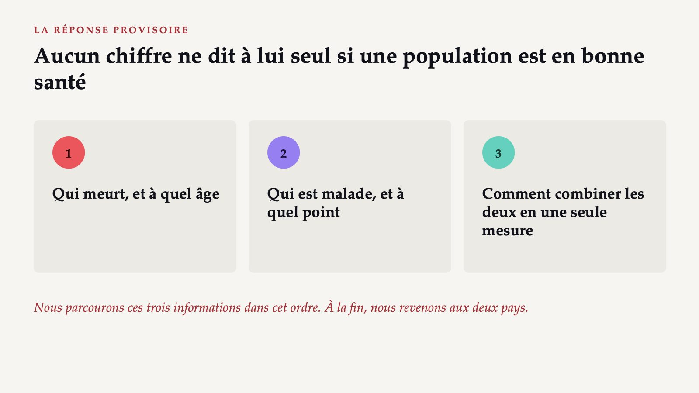
6 / 43On meurt plus qu’en Roumanie
7 / 43Le taux brut : une moyenne pondérée, pas un risque
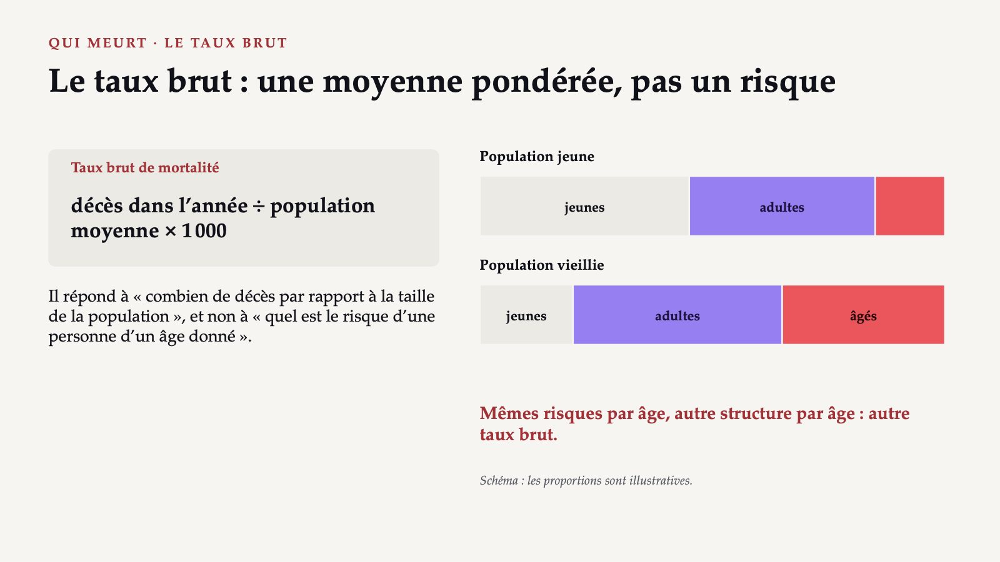
8 / 43La Croatie semble plus touchée, jusqu’à ce qu’on compare correctement
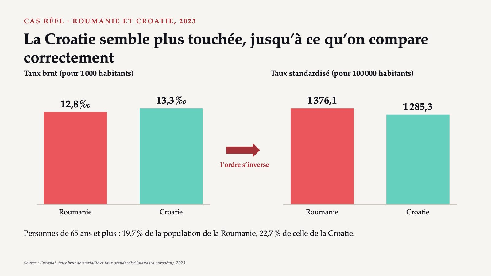
9 / 43Taux standardisé
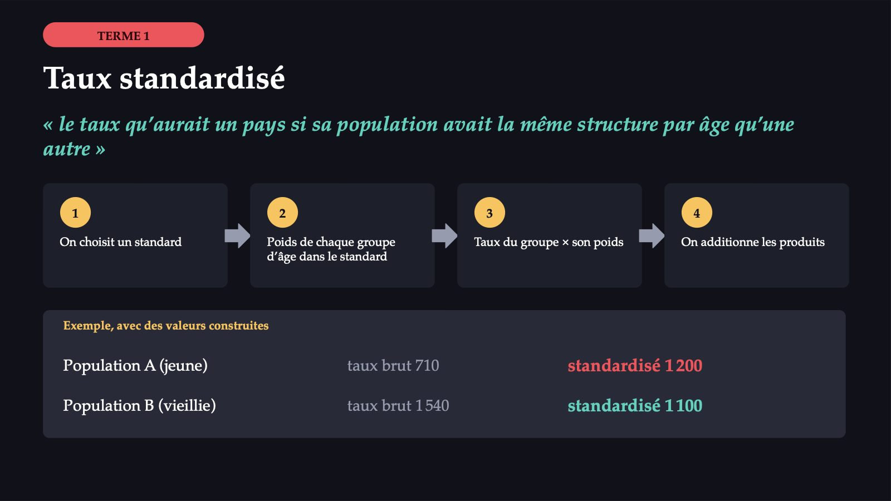
10 / 43Autre standard, autre ordre, quand les taux se croisent
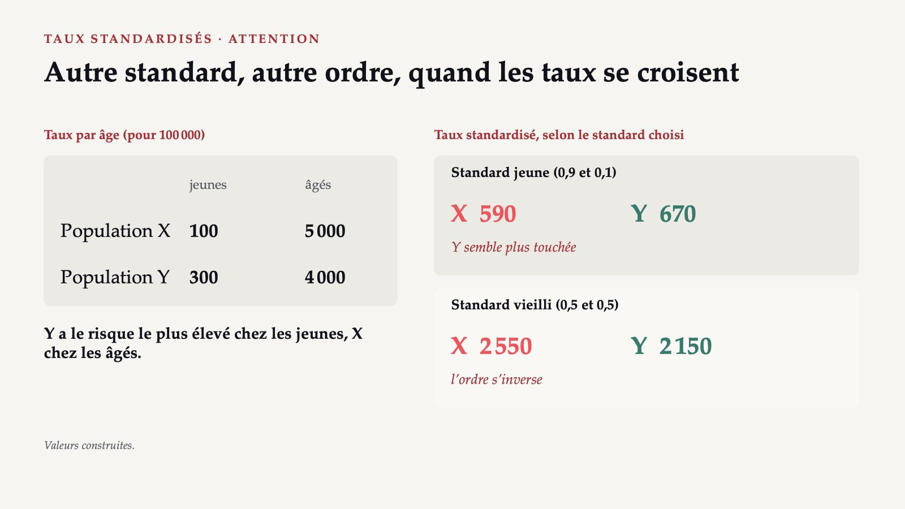
11 / 431,10
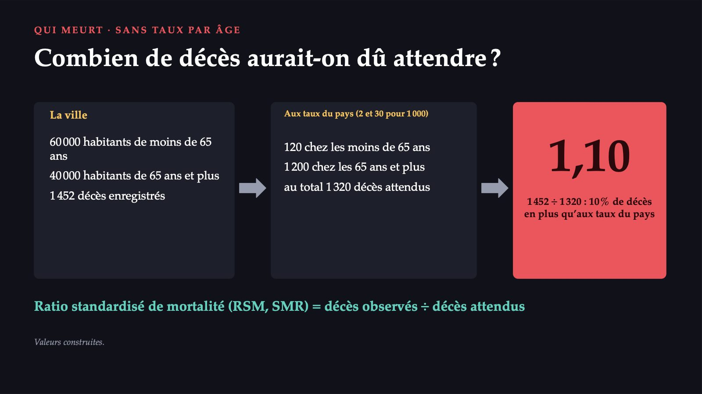
12 / 43Vrai ou faux ?
![MENTIMETER · VRAI OU FAUX CINQ AFFIRMATIONS, SUR TÉLÉPHONE Vrai ou faux ? 1 Le pays X a un taux brut plus élevé que le pays Y, donc ses habitants ont un risque de décès plus élevé. 2 Un ratio standardisé de mortalité supérieur à un signifie plus de décès qu’aux taux de la population de référence. 3 Le taux de mortalité infantile rapporte les décès avant un an à la population totale. 4 La standardisation directe exige les taux par âge des populations comparées. 5 Les ratios standardisés de mortalité de deux comtés se comparent directement.](diapozitive/C02/013.jpg) 13 / 43
13 / 43Faux, vrai, faux, vrai, faux
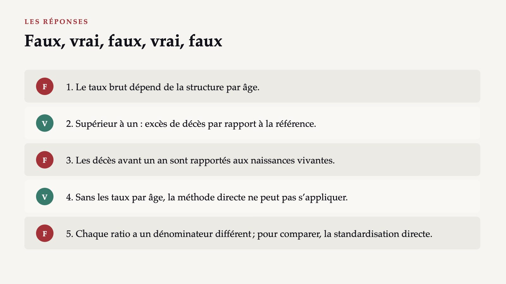
14 / 43Deux patients la même nuit : combien d’années ont été perdues avant 75 ans ?
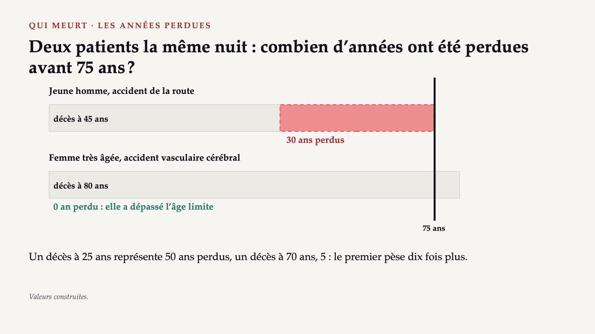
15 / 43Ce que la prévention aurait évité, ce que des soins en temps utile auraient évité
![QUI MEURT · DÉCÈS ÉVITABLES, AVANT 75 ANS, 2023 Ce que la prévention aurait évité, ce que des soins en temps utile auraient évité Évitables par la prévention (prévention, santé publique) Roumanie 264,0 Union européenne 150,9 environ trois quarts de plus que la moyenne de l’UE Évitables par les traitements (soins médicaux en temps utile) Roumanie 199,7 Union européenne 86,8 plus de deux fois la moyenne de l’UE Taux standardisés, pour 100 000 habitants, liste commune OCDE–Eurostat. Source : Eurostat, mortalité évitable (hlth_cd_apr), 2023.](diapozitive/C02/016.jpg) 16 / 43
16 / 43Un homme de cinquante-cinq ans meurt d’un cancer du poumon
17 / 43Évitable par la prévention : on classe selon la cause et l’âge, pas selon les antécédents
![LA RÉPONSE Évitable par la prévention : on classe selon la cause et l’âge, pas selon les antécédents Évitable par la prévention cancer du poumon, codes C33–C34, âges 0–74 La classification ne dit pas que le patient n’aurait pas pu être soigné : elle dit que de tels décès s’évitent surtout par la prévention primaire, d’abord par la réduction du tabagisme. On classe selon la cause du décès et l’âge au décès, pas selon les antécédents du patient. Source : liste commune OCDE–Eurostat de la mortalité évitable.](diapozitive/C02/018.jpg) 18 / 43
18 / 43De quoi meurent les Roumains ?
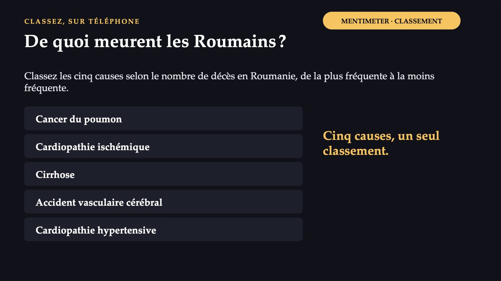
19 / 43De quoi meurent les Roumains : deux maladies cardiovasculaires en tête
![LA RÉPONSE · GBD 2023 De quoi meurent les Roumains : deux maladies cardiovasculaires en tête Cardiopathie ischémique 56 400 (22,9 %) Accident vasculaire cérébral 44 100 (17,9 %) Cardiopathie hypertensive 14 000 (5,7 %) Cancer du poumon 10 400 (4,2 %) Cirrhose 10 100 (4,1 %) Maladies de l’appareil circulatoire : 54,0 % des décès en Roumanie, en 2023 (Eurostat). Les valeurs du GBD sont des estimations de modèle. Source : IHME, Global Burden of Disease Study 2023, Roumanie, 2023 ; Eurostat, décès par cause, 2023.](diapozitive/C02/020.jpg) 20 / 43
20 / 43Le nouveau médecin de famille
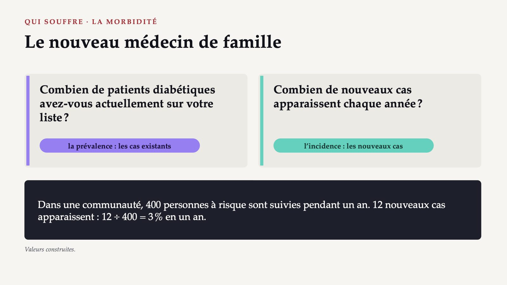
21 / 43La prévalence : combien de malades en ce moment
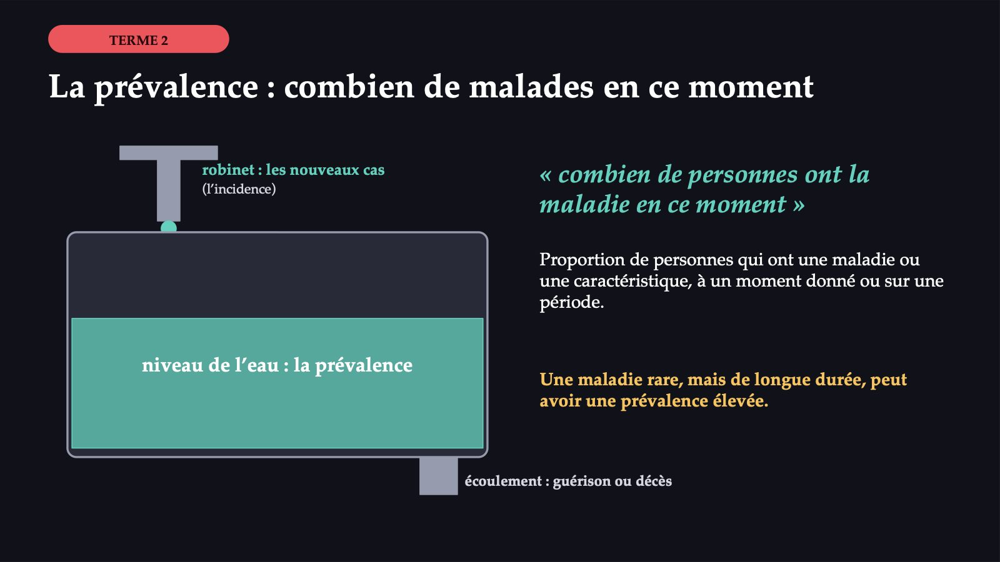
22 / 43Prévalence ≈ nouveaux cas × durée de la maladie
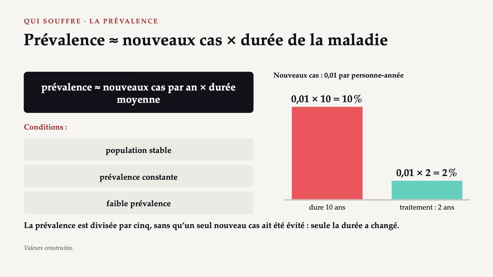
23 / 43Croiriez-vous ce titre ?
![À DEUX · 2 MINUTES LE PARADOXE DU TRAITEMENT EFFICACE La prévalence augmente. Le programme a-t-il échoué ? Une infection chronique, traitable mais incurable La prévention réduit l’incidence de 40 % : les nouveaux cas sont multipliés par 0,6. Le traitement fait vivre les malades cinq fois plus longtemps : la durée est multipliée par 5. 0,6 × 5 = 3 : la prévalence est trois fois plus élevée Un journal titre : « le programme de lutte a échoué ». Croiriez-vous ce titre ? Avec votre voisin, en deux phrases : l’explication que vous donneriez à un journaliste. Valeurs construites.](diapozitive/C02/024.jpg) 24 / 43
24 / 43Le patient atteint de plusieurs maladies
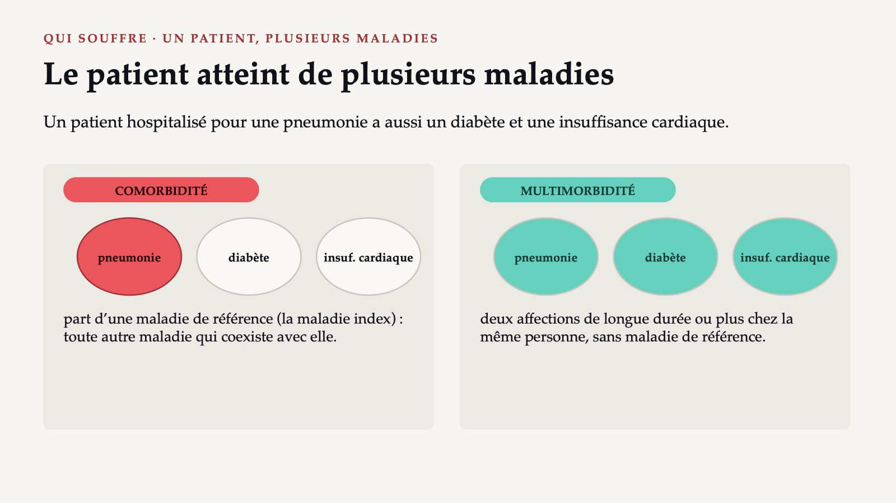
25 / 4315,7 %
![QUI SOUFFRE · CE QUE NOUS SAVONS ET CE QUE NOUS IGNORONS Qui ignore sa maladie ne peut pas la déclarer DÉCLARÉ 15,7 % hypertension artérielle, personnes de 15 ans et plus, Roumanie, 2019 (enquête EHIS) MESURÉ 45,1 % hypertension artérielle, adultes en Roumanie (étude SEPHAR III, tension mesurée) Diabète déclaré en Roumanie : 5,0 %. Moyenne de l’UE : 7,4 % pour le diabète, 21,9 % pour l’hypertension. Ces chiffres ne se comparent pas directement, mais l’écart a une explication simple. La même chose nous rend prudents avec les années de vie en bonne santé du début.](diapozitive/C02/026.jpg) 26 / 43
26 / 43Quelle source utilisez-vous ?
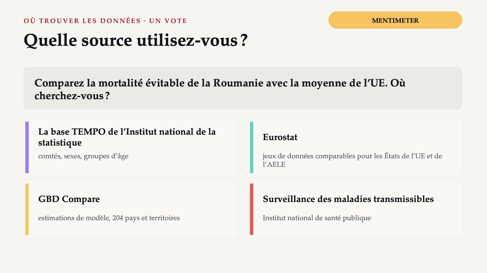
27 / 43La ligne qui fait les statistiques
![QUALITÉ DES DONNÉES · QUI REMPLIT LE CERTIFICAT La ligne qui fait les statistiques CERTIFICAT DE DÉCÈS · EXTRAIT Cause directe : insuffisance cardiaque Cause initiale : la maladie qui a déclenché la chaîne d’événements ________ Scène reconstituée ; le certificat est fictif. Cinq problèmes qui reviennent 1. la sous-déclaration 2. le codage incorrect de la cause 3. des définitions différentes d’un pays à l’autre 4. le retard de publication : la dernière année avec causes de décès est 2023 5. les codes non spécifiques, sans la maladie qui a déclenché la chaîne Toutes les statistiques sont construites à partir des certificats individuels.](diapozitive/C02/028.jpg) 28 / 43
28 / 43Où l’écart avec la moyenne de l’UE est le plus grand
![LA ROUMANIE DANS L’UNION EUROPÉENNE Où l’écart avec la moyenne de l’UE est le plus grand Roumanie UE rapport Roumanie ÷ UE Espérance de vie à la naissance (ans), 2024 76,5 81,5 5,0 ans de moins Années de vie en bonne santé (Eurostat), 2024 65,0 65,2 rupture de série Taux standardisé de mortalité, 2023 1 376,1 963,4 Mortalité évitable par la prévention, 2023 264,0 150,9 environ trois quarts de plus Mortalité évitable par les traitements, 2023 199,7 86,8 plus de deux fois Mortalité infantile, 2024 6,6 3,5 presque deux fois Dépenses de santé (% du PIB), 2023 5,8 9,9 bien sous la moyenne Les années de vie en bonne santé ne servent ni pour ni contre les autres constats. Source : Eurostat (indicateurs du tableau). Ligne verticale : moyenne de l’UE ; point rouge : Roumanie plus éloignée de la moyenne, dans le sens défavorable.](diapozitive/C02/029.jpg) 29 / 43
29 / 43La charge de morbidité entre vos mains
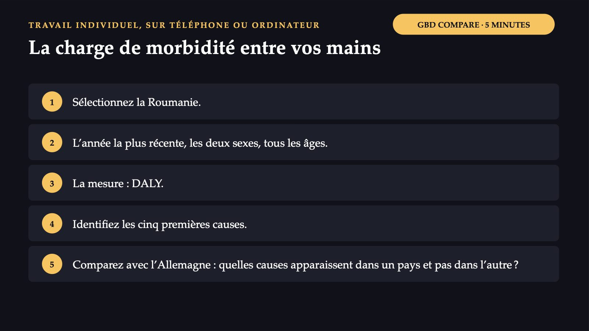
30 / 43DALY
![TERME 3 La garde de neurologie : qu’a perdu le patient ? Homme de quarante-cinq ans, accident vasculaire cérébral. Il survit, avec une hémiparésie et une aphasie, et ne peut plus reprendre son travail. La mortalité ne le compte pas : il n’est pas mort. La morbidité le compte une seule fois, comme n’importe qui. DALY « les années de vie en bonne santé perdues, par décès prématuré ou par maladie » YLL années perdues par décès : décès × espérance de vie de référence YLD années vécues avec une incapacité : durée × pondération d’incapacité DALY = YLL + YLD](diapozitive/C02/031.jpg) 31 / 43
31 / 430
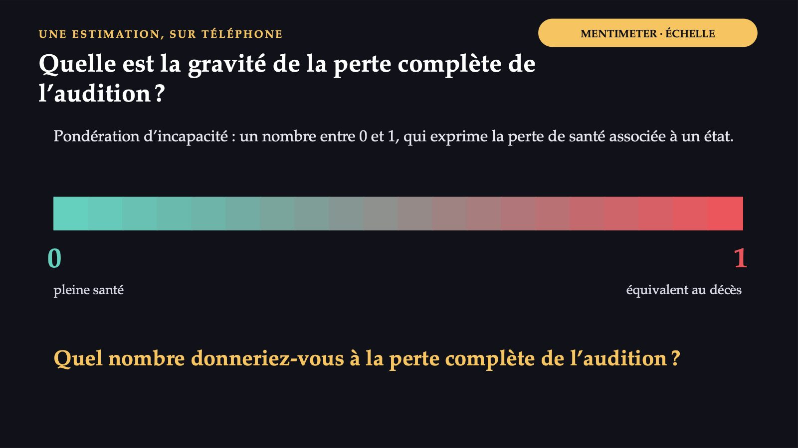
32 / 43Le même état, deux pondérations : plus de six fois plus élevée
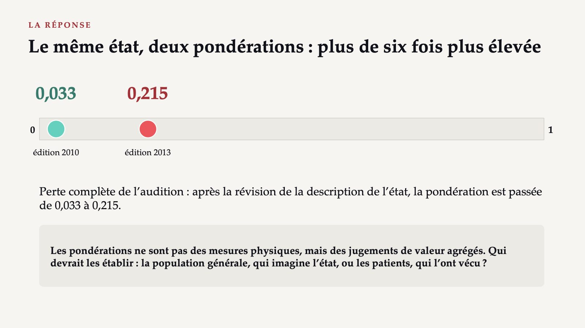
33 / 43À la troisième place, une maladie qui ne tue pas
![LA RÉPONSE · DALY, GBD 2023 À la troisième place, une maladie qui ne tue pas Roumanie, 2023 Cardiopathie ischémique 988 000 (12,9 %) Accident vasculaire cérébral 757 000 (9,9 %) Lombalgie 384 000 (5,0 %) Cirrhose 293 000 (3,8 %) Cancer du poumon 259 000 (3,4 %) Rangs 3 à 5 : les intervalles d’incertitude se chevauchent ; l’ordre n’est pas sûr. Allemagne, 2023 1. Cardiopathie ischémique 2. Chutes 3. Lombalgie 4. Maladie d’Alzheimer et autres démences 5. Accident vasculaire cérébral En Roumanie dominent les maladies cardiovasculaires et la cirrhose apparaît ; en Allemagne, les chutes et la démence montent. Source : IHME, Global Burden of Disease Study 2023, les deux sexes, tous les âges.](diapozitive/C02/034.jpg) 34 / 43
34 / 43Le DALY du patient de la garde
35 / 4321
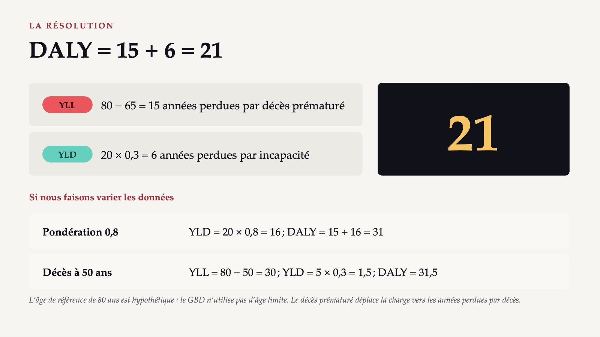
36 / 43Qui perd le plus : la fillette ou l’homme ?
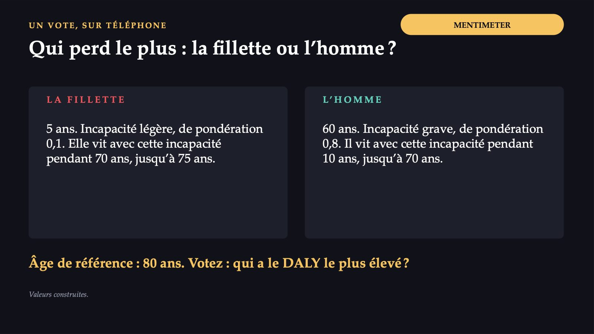
37 / 4312
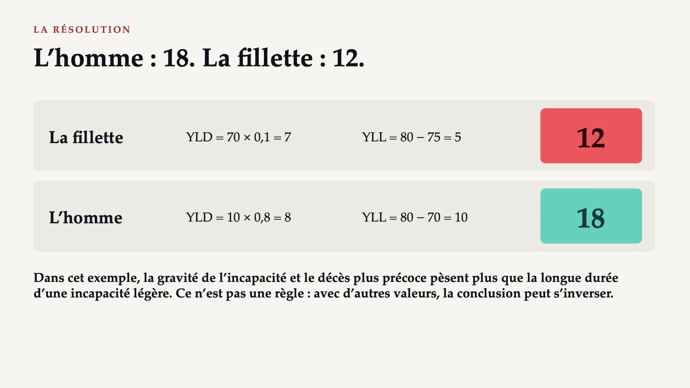
38 / 43QALY
![MENTIMETER CE QUE L’ON GAGNE · LA COMMISSION QUI DÉCIDE La commission : un médicament nouveau, coûteux, qui change la qualité de vie QALY les années de vie pondérées par leur qualité, de 0 à 1 QALY = années × utilité Il vous reste 30 ans à vivre avec une maladie chronique qui limite fortement vos activités. Combien d’années échangeriez-vous pour vivre le reste en pleine santé ? Ce que signifient les réponses Celui qui cède 5 de ses 30 ans attribue à l’état de maladie l’utilité (30 − 5) ÷ 30 = 0,83. Celui qui cède 10 ans : 0,67. Les réponses diffèrent : l’utilité est un jugement de valeur. Valeurs construites.](diapozitive/C02/039.jpg) 39 / 43
39 / 43Trois mesures, trois questions différentes
![À LIRE À LA MAISON Trois mesures, trois questions différentes DALY Quelles maladies causent la plus grande perte dans une population ? compare la charge des maladies et fixe des priorités QALY Un nouveau médicament mérite-t-il d’être financé ? évalue le rapport coût-efficacité d’une intervention HALE Comment évolue, dans l’ensemble, la santé d’une population ? suit la santé de la population Dans les notes, aux sections sur le QALY et l’espérance de vie en bonne santé : les seuils utilisés au Royaume-Uni et la loi américaine, les années vécues en bonne santé, la comparaison complète.](diapozitive/C02/040.jpg) 40 / 43
40 / 43Ce que vous ferez différemment, dès demain
![DES DONNÉES À LA DÉCISION · DÈS DEMAIN, EN TANT QUE MÉDECINS Ce que vous ferez différemment, dès demain données brutes indicateurs comparaisons priorités interventions évaluation 1 Lorsque vous lisez une comparaison de mortalité, demandez d’abord si les taux sont standardisés et sur quel standard. 2 Lorsque vous remplissez un certificat de décès, inscrivez la cause initiale le plus précisément possible : c’est de lui que viennent toutes les statistiques. 3 Lorsqu’un patient vous dit qu’il « n’a rien », mesurez la tension artérielle : une maladie inconnue ne se déclare pas. 4 Lorsque vous entendez qu’une maladie « est prioritaire », demandez quel indicateur a été utilisé et qui est resté en dehors du calcul.](diapozitive/C02/041.jpg) 41 / 43
41 / 43Cinq idées du cours d’aujourd’hui
![À RETENIR Cinq idées du cours d’aujourd’hui 1 Le taux brut mélange le risque par âge et le vieillissement de la population. 2 Deux populations se comparent d’après les taux standardisés ou les taux par âge. 3 Le taux standardisé est un instrument de comparaison, et non le nombre réel de décès. 4 La prévalence dépend des nouveaux cas et de la durée de la maladie : un traitement qui prolonge la vie l’augmente. 5 DALY, QALY et HALE répondent à des questions différentes ; aucune ne remplace les autres. Revenons aux deux pays : la différence d’années de vie en bonne santé entre la Roumanie et la Lettonie ne peut pas se lire comme une différence réelle de santé.](diapozitive/C02/042.jpg) 42 / 43
42 / 43Trois questions pour finir
43 / 43Flèches ou espace : navigation · O : vue d’ensemble · N : notes de l’intervenant · F : plein écran · Échap : fermer